어떤 기준으로 뽑은 순위인가요?
이 순위는 11월 12일 기준 깃허브 트렌딩의 주간 목록에서 AI 프로젝트만 골라 위에서부터 열 개를 뽑은 거예요. 영상 초반에 실제 트렌딩 페이지가 잠깐 지나가는데, 맨 위가 NVIDIA/auto-ontology, 그다음이 anthropics/skills, vercel-labs/agent-desktop 순이에요. 그 순서가 그대로 1·2·3위가 됐어요.
아래 화면이 열 개를 한 번에 보여 주는 목록이에요. 오른쪽 노란 숫자가 이번 주에 늘어난 별이고, 하단 작은 글씨에 '10개 이번 주 별 합계 63,355'라고 적혀 있어요. 영상이 말한 '일주일 만에 별 6만 개'가 이 합계예요.
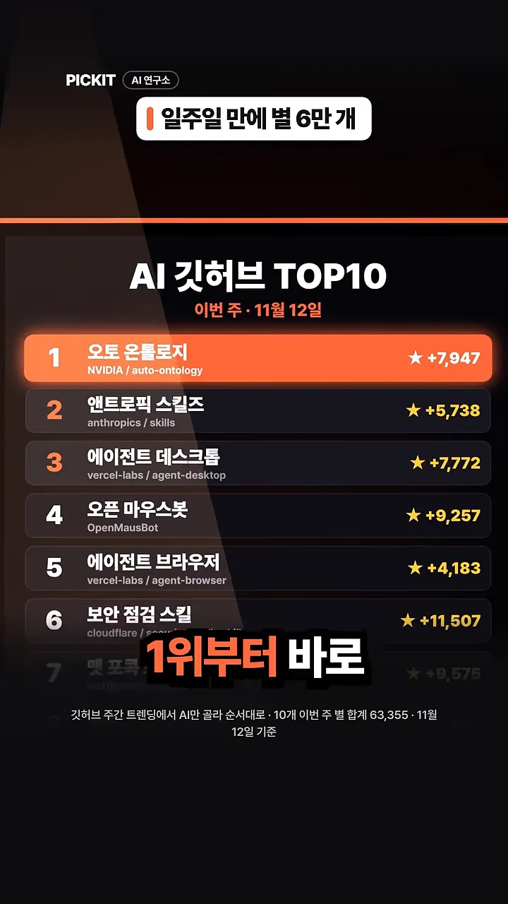
목록 화면은 넘어가는 게 빨라서 열 개를 다 읽기 어려워요. 영상에 나온 이름과 저장소, 별 증가를 표로 옮겼어요.
| 순위 | 이름 | 저장소 | 한 줄 설명 | 이번 주 별 |
|---|---|---|---|---|
| 1 | 오토 온톨로지 | NVIDIA/auto-ontology | 숫자 안 틀리는 AI | +7,947 |
| 2 | 앤트로픽 스킬즈 | anthropics/skills | AI 업무 매뉴얼 | +5,738 |
| 3 | 에이전트 데스크톱 | vercel-labs/agent-desktop | 내 컴퓨터를 AI가 직접 | +7,772 |
| 4 | 오픈 마우스봇 | OpenMausBot | 채팅방 속 AI 직원들 | +9,257 |
| 5 | 에이전트 브라우저 | vercel-labs/agent-browser | 인터넷도 AI가 직접 | +4,183 |
| 6 | 보안 점검 스킬 | cloudflare/security-audit-skill | 보안 구멍 찾고 한 번 더 검증 | +11,507 |
| 7 | 맷 포콕 스킬즈 | mattpocock/skills | 제대로 개발시키는 스킬 | +9,575 |
| 8 | 클로드 코드 게임 스튜디오 | Claude-Code-Game-Studios | 말하면 게임 완성 | +3,150 |
| 9 | 구글 스킬즈 | google/skills | 구글 공식 AI 스킬 | +2,013 |
| 10 | 허더 | herdr | AI 비서 관제탑 | +2,213 |
같은 숫자를 막대로 세우면 순위와 별 수가 따로 논다는 게 바로 보여요. 4위·6위·7위가 1위보다 별을 더 받았어요. 그러니 이 영상의 '1위'는 '가장 인기 있는 것'보다 '트렌딩 목록 맨 위'로 읽는 게 맞아요.
1~5위: 데이터 지도부터 브라우저까지
앞의 다섯 개는 'AI가 무엇을 알게 하거나, 직접 손을 움직이게 하는' 도구예요. 화면 속 회사·숫자·사이트는 모두 설명용 예시라고 하단에 적혀 있어요.
1위 오토 온톨로지 — 숫자 안 틀리는 AI
엔비디아가 낸 프로젝트예요. 회사 데이터에 '이 칸이 무슨 뜻인지' 적은 뜻풀이 지도, 즉 온톨로지를 붙여요. 아래 화면은 제품·분기 같은 데이터 조각을 선으로 이은 뒤, "이번 분기 매출 얼마야?"라는 질문을 던지는 장면이에요. 지도가 있어야 AI가 '매출'이 어느 데이터의 어떤 계산인지 헷갈리지 않아요.
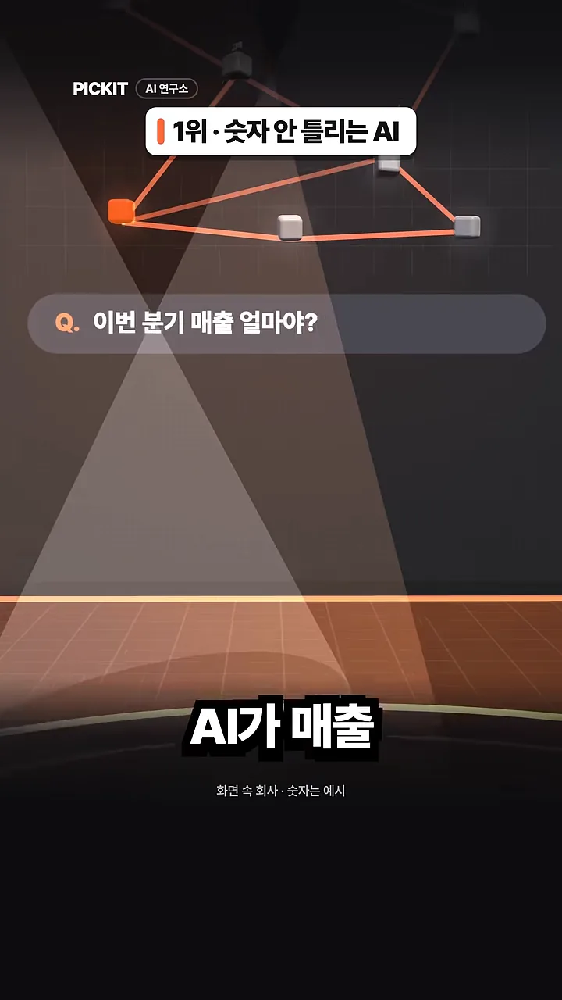
2위 앤트로픽 스킬즈 — AI 업무 매뉴얼
Claude를 만든 Anthropic이 직접 공개한 에이전트 스킬 모음이에요. 화면의 anthropics / skills 목록을 보면 폴더마다 SKILL.md가 하나씩 있어요. docx는 문서, pptx는 발표 자료, xlsx는 엑셀 표, pdf, brand-guidelines는 브랜드 디자인, frontend-design은 웹 디자인이에요. 매뉴얼을 따라 하니 같은 일을 매번 같은 품질로 해요.
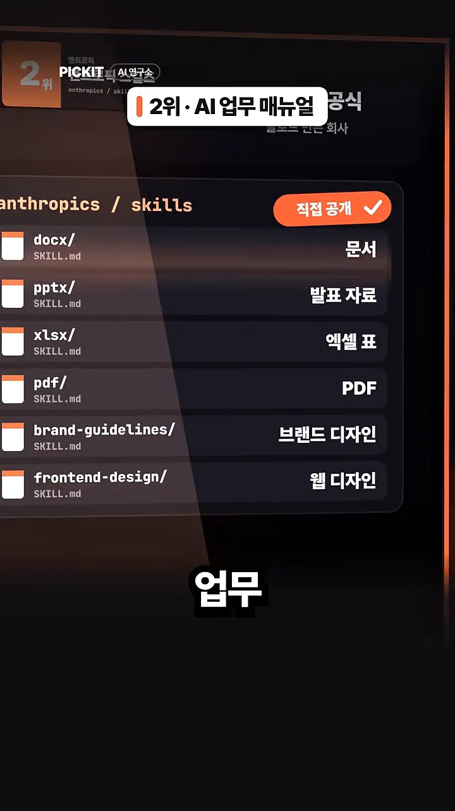
3위 에이전트 데스크톱 — 내 컴퓨터를 AI가 직접
Vercel이 낸 컴퓨터 유즈 도구예요. 화면은 영상 편집 앱의 새 프로젝트 창이고, 오른쪽에 자르기·자막 넣기·효과·내보내기 버튼이 있어요. 커서가 이 버튼을 AI 대신 눌러 주는 모습이에요. 맥·윈도우·리눅스에서 다 된다고 적혀 있어요.
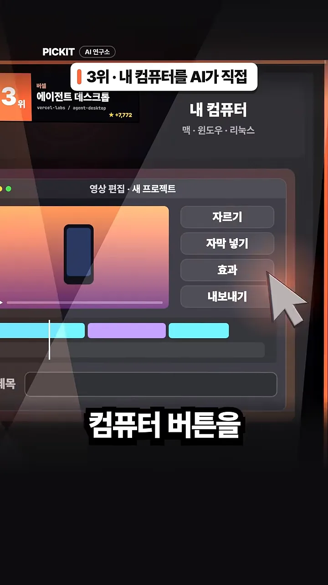
4위 오픈 마우스봇 — 채팅방 속 AI 직원들
채팅방 하나에 AI 직원을 여러 명 두는 앱이에요. 화면의 'AI 팀 5'에는 기획·디자인·리서치·카피·개발 AI가 있어요. 사람이 "신제품 런칭 페이지 만들어 줘"라고 보내면, 기획 AI가 '페이지 구성 끝'이라고 답해요. 톡 보내듯 일을 맡기는 거예요.
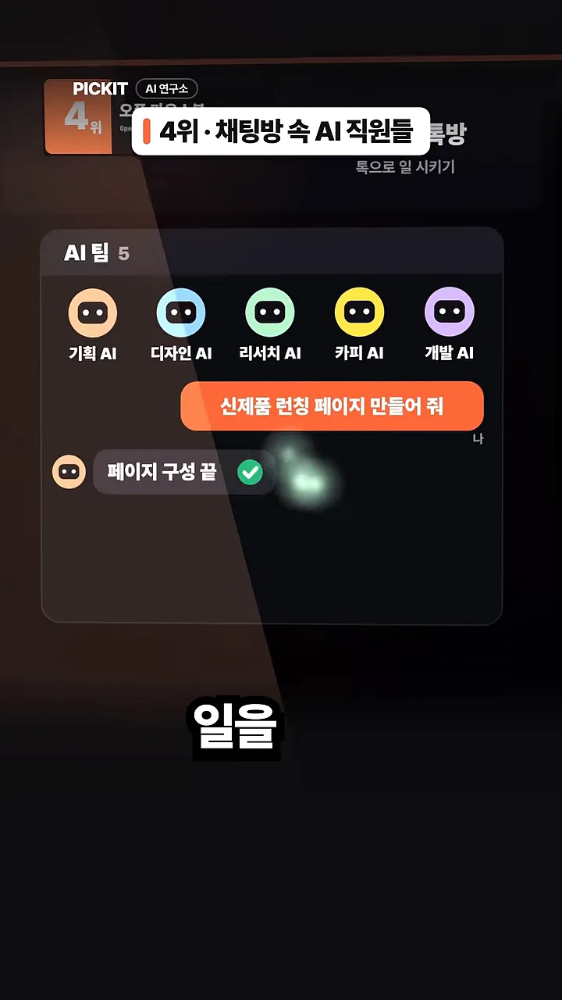
5위 에이전트 브라우저 — 인터넷도 AI가 직접
3위와 같은 Vercel 팀 도구인데, 이번엔 브라우저를 다뤄요. 화면 예시는 '해외 쇼핑몰 3곳 비교'예요. AI가 shop-a, shop-b, shop-c를 직접 열어 상품 A $59, 상품 B $48, 상품 C $64를 읽고, 아래 '비교표 만들기'까지 해요.
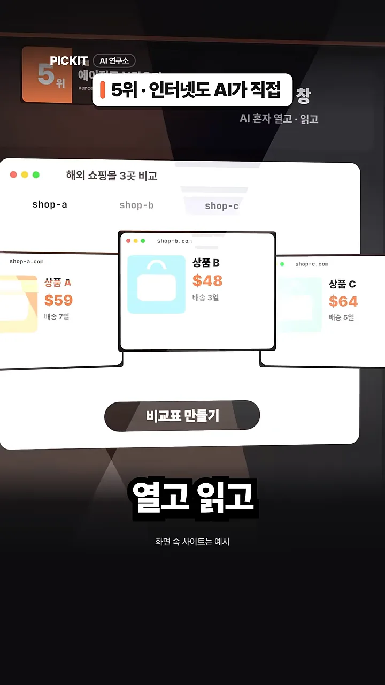
6~10위: 보안·개발·게임·구글·관제탑
뒤의 다섯 개는 개발과 업무 흐름을 다듬는 스킬 모음과 도구예요.
6위 보안 점검 스킬 — 이번 주 별 1등
Cloudflare가 낸 스킬이에요. 6위지만 이번 주 별은 열 개 중 가장 많아요. 아래 화면은 '이번 주 늘어난 별' 막대인데, 6위가 노란 막대로 맨 위에 있어요.
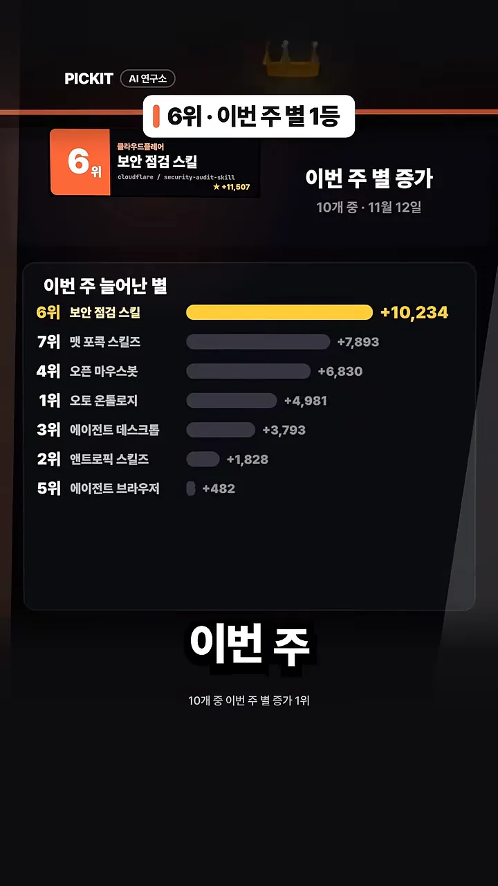
하는 일은 두 단계예요. 먼저 AI가 '내 쇼핑몰 앱'의 로그인·결제·회원 정보·주문·API를 돌며 구멍을 찾아요. 화면에서는 로그인 칸에 '구멍 발견!'이 떠요. 그다음 다른 AI(검사 AI)가 그 구멍을 한 번 더 확인해서 '확인됨' 도장을 찍고, 위험 1건과 고칠 방법을 담은 보안 보고서를 내요.
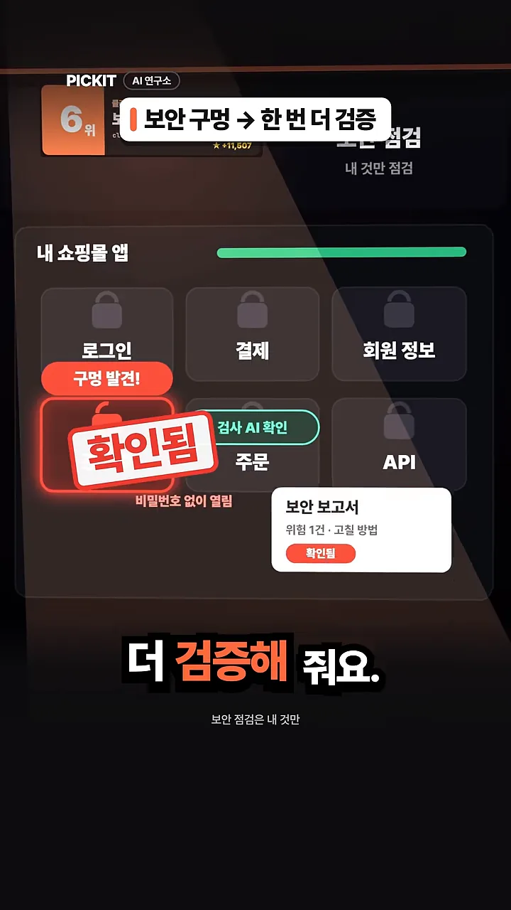
7위 맷 포콕 스킬즈 — 제대로 개발시키는 스킬
영상이 '유명 개발 강사'라고 부르는 사람은 저장소 이름에 나온 Matt Pocock이에요. 칠판 화면 제목은 'Skills for Real Engineers(매일 쓰는 진짜 개발 스킬)'이고, 스킬 다섯 개가 붙어 있어요.
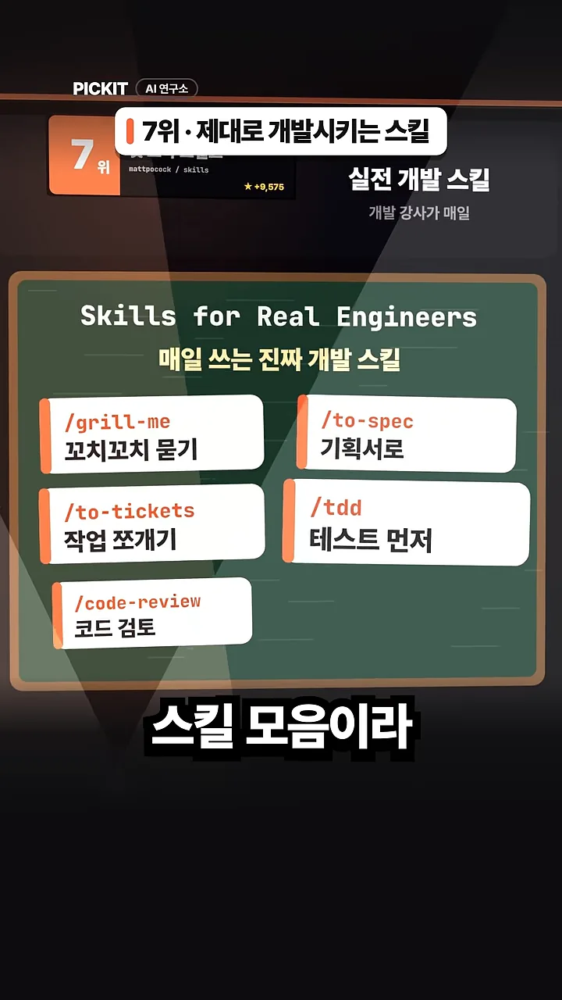
깃허브 누적 별은 322,073개, 이번 주에만 +9,575개예요. 영상이 말한 '32만 개'가 이 누적 숫자예요.
8위 클로드 코드 게임 스튜디오 — 말하면 게임 완성
Claude Code 위에서 도는 게임 제작 도구예요. 화면 예시에서 "노을 질 때만 희귀한 물고기가 무는 낚시 게임 만들어 줘"라고 말하자, 노을 진 바다와 낚싯대를 든 캐릭터, '희귀 물고기 0/1'과 '노을 타임' 표시가 있는 게임이 바로 떠요. 하단에 'Claude Code(유료 요금제)에서 써요'라고 적혀 있어요.
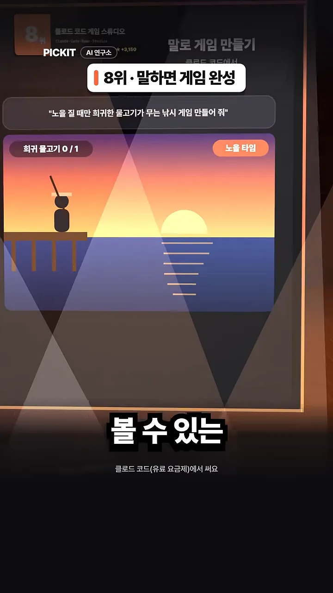
9위 구글 스킬즈 — 구글 공식 AI 스킬
구글이 직접 낸 스킬 모음이에요. 화면의 google / skills 목록에는 Gemini API in Agent Platform, Cloud SQL(Structured Query Language) Basics, Spanner Basics, Configure Cloud Monitoring Alerts, IAM(Identity and Access Management) Helper for Policy Management, AlloyDB Basics, Genkit JS(JavaScript), Cloud Build Basics가 보여요. 대부분 구글 클라우드 서비스라서, AI에게 클라우드 작업을 맡길 때 쓸모가 있어요.
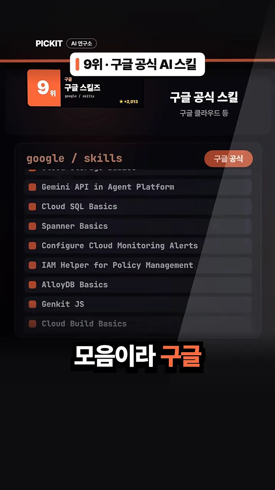
10위 허더 — AI 비서 관제탑
코딩 에이전트 여러 개를 한 화면에서 돌리는 도구예요. 화면에는 비서 1~6이 칸마다 '작업 중' 또는 '쉬는 중'으로 떠 있어요. 그중 비서 3만 빨간 테두리에 '막힘'이 뜨고, '답이 필요해요'라고 알려 줘요. 여러 개를 띄워 놓고 막힌 것만 골라 답하면 돼요.
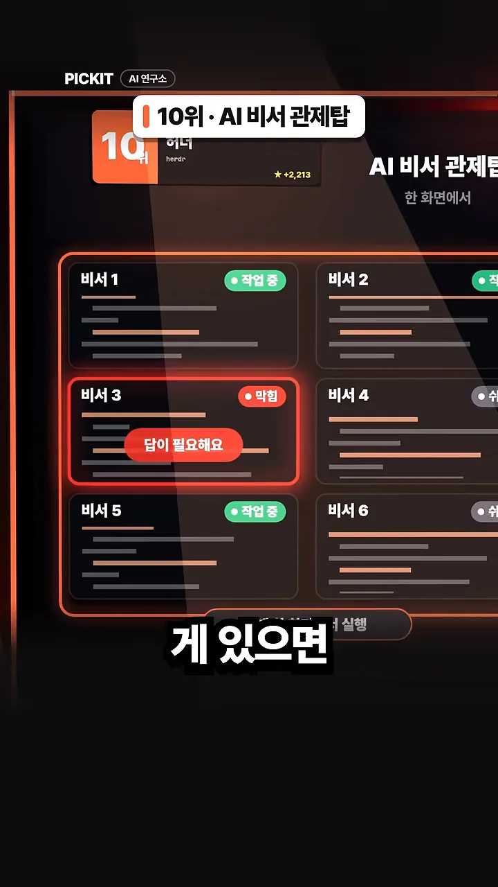
영상은 열 개 모두 코드가 공개돼 있어서 누구나 받아 쓸 수 있다고 마무리해요. 받는 것 자체는 무료예요.